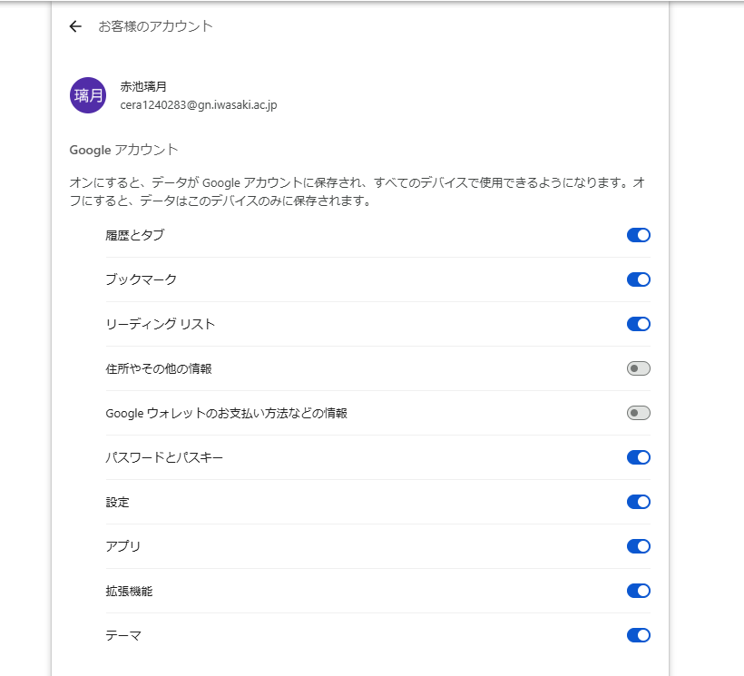

年度・授業を選んで、すべてのタスクを追加・編集・削除できます。
タスクの保存先を選択できます。切り替えるときは、現在のタスクが新しい保存先へコピーされます。
を開き、「拡張機能」をオンにしてください。

現在の保存先の使用量です。
各パソコンで「この端末の印を残す」を押すと、その記録が Google アカウント経由で同期されます。
別のパソコンの印がここに表示されていれば、同期は正常に動いています。このページを開いたままでも、他の端末からの更新はリアルタイムで反映されます。
すべてのタスクを JSON ファイルとして保存・復元できます。
不要になったタスクをまとめて削除して容量を確保できます。